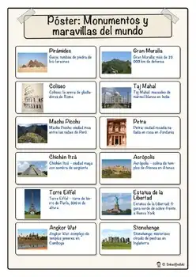
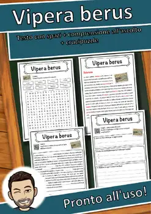
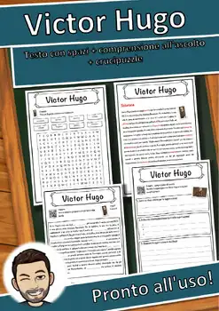
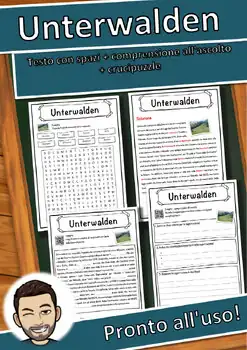
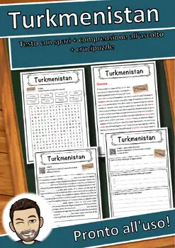

Monumentos y Maravillas del Mundo: Fichas y Actividades Diferenciadas
¡Explora el mundo desde el aula! Este completo paquete de materiales de 34 páginas es ideal para introducir a tus alumnos en la historia y la cultura global a través de 12 monumentos y maravillas del mundo icónicas. Diseñado para adaptarse a diversos niveles de aprendizaje, este recurso es perfecto tanto para centros educativos en España (siguiendo el marco LOMLOE) como para clases de español en Estados Unidos y programas de inmersión lingüística.
El paquete incluye un póster visual para decorar el aula, 12 fichas informativas detalladas y tarjetas de información diferenciadas que permiten trabajar con diferentes ritmos y niveles de comprensión lectora. Además, encontrarás una divertida página de acertijos para fomentar el pensamiento crítico, una página para colorear que estimula la creatividad y, lo más importante, las soluciones para facilitar la corrección rápida por parte del docente.
Es una herramienta versátil para proyectos de geografía, historia o lengua. Gracias a la diferenciación de contenidos, podrás atender a la diversidad de tu alumnado de forma sencilla y efectiva. ¡Haz que el aprendizaje sea una aventura inolvidable!
⭐ ¿Te ha gustado este recurso? Deja una breve valoración en TPT: así ganas créditos de TPT para futuras compras y me ayudas muchísimo. Pulsa "Follow" en mi tienda para enterarte primero de los nuevos recursos gratuitos.
U.S. STANDARDS (alignment):
- RI.5.1; RI.5.4; L.5.4; RI.6.1; RI.6.4; L.6.4; RI.7.1; RI.7.4; L.7.4; RST.6-8.4; RH.6-8.4; ACTFL World-Readiness Standards: Interpretive Communication; ACTFL Cultures (Relating Cultural Practices/Products to Perspectives); ACTFL Connections (Acquiring Information and Diverse Perspectives)
- Frameworks: Common Core en Español (Spanish Language Arts / Dual Language, same CCSS codes); ACTFL World-Readiness Standards for Learning Languages
- Also supports the state standards of non-CCSS states, e.g. Texas TEKS (Languages Other Than English, §114); Florida World Languages Standards; Virginia World Language SOL; Indiana World Language Standards; Oklahoma World Languages Standards; Georgia GSE Modern Languages; Texas TEKS (Social Studies, §113); Florida NGSSS (Social Studies); Virginia History and Social Science SOL; Indiana Academic Standards for Social Studies; Oklahoma Academic Standards for Social Studies; Georgia GSE Social Studies; New York K-12 Social Studies Framework – and the CCSS-based standards of all other U.S. states (please check the exact local code).
Similar resources
Zona temperata – Italian Reading Comprehension Worksheet (Scheda didattica)
William Shakespeare – Italian Reading Comprehension Worksheet (Scheda didattica)
Vladivostok – Italian Reading Comprehension Worksheet (Scheda didattica)

Vipera berus – Italian Reading Comprehension Worksheet (Scheda didattica)

Victor Hugo – Italian Reading Comprehension Worksheet (Scheda didattica)

Unterwalden – Italian Reading Comprehension Worksheet (Scheda didattica)
Trasporto a fune – Italian Reading Comprehension Worksheet (Scheda didattica)
